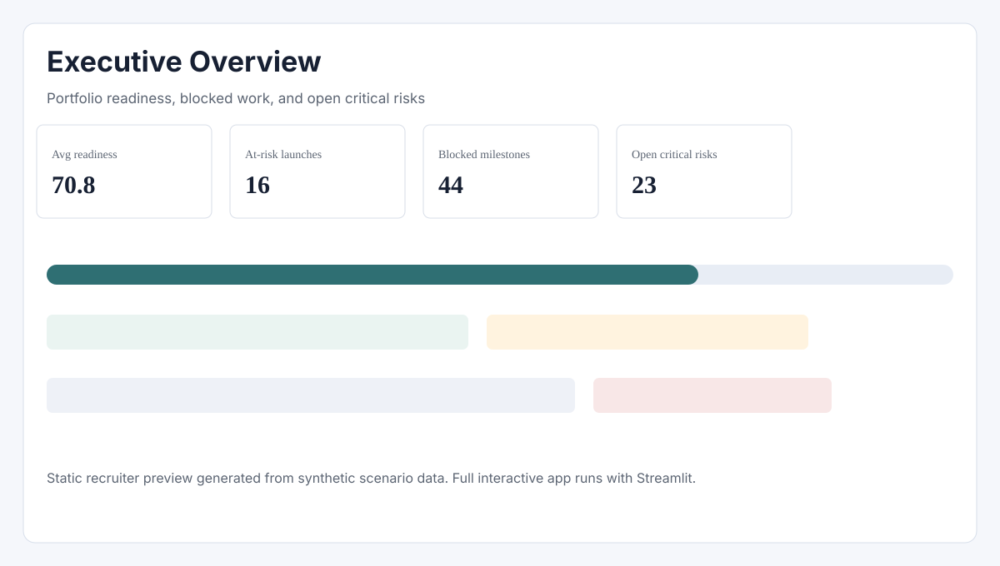
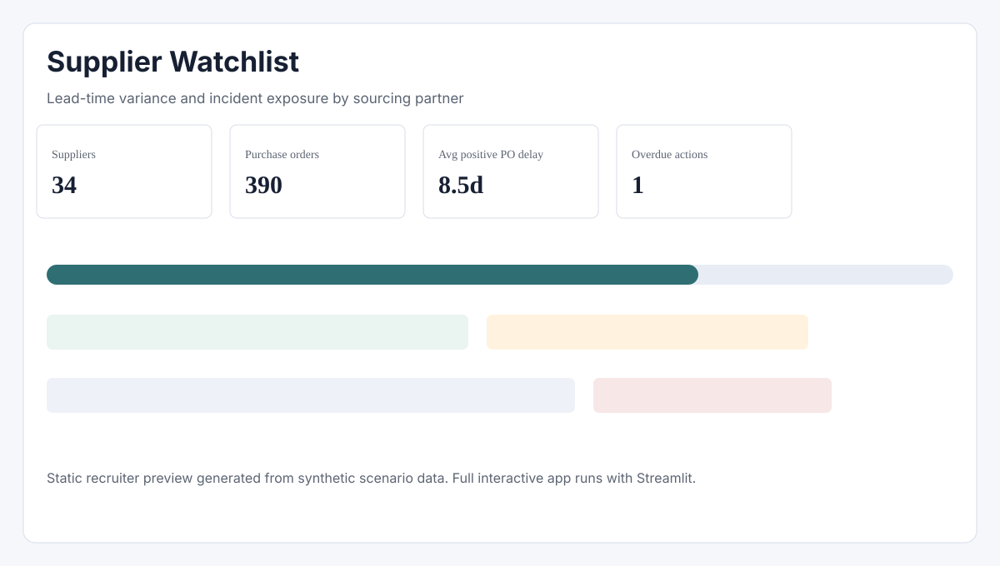
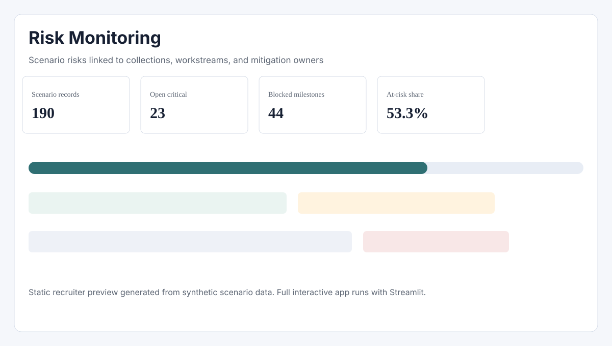

Executive Summary
This project is a synthetic fashion launch control tower. It connects collections, suppliers, purchase orders, milestones, incidents, risks, and mitigation actions so a PMO or operations team can identify where launch readiness is under pressure.
Business View
This static page is designed for GitHub Pages and recruiter review. It summarizes the same synthetic scenario dataset used by the Streamlit dashboard, without requiring a local app server or external credentials.
Readiness Bands
Delay by Workstream
Supplier Delay Watchlist
Portfolio Scope
390 purchase orders, 540 milestones, 190 risks, 240 mitigation actions, and 34 representative suppliers are connected through collection IDs and supplier IDs.
Dashboard Preview Screenshots
These previews are included for reviewers who do not run the Streamlit app. The complete interactive app includes filters, tabs, maps, scenario analysis, and dynamic Plotly charts.



Data Model
The project uses a small CSV-based model so reviewers can inspect the inputs without a database.
Core Tables
collections: launch portfolio, brands, markets, scope, readinesssuppliers: representative sourcing partners and risk contextpurchase_orders: planned and actual supply-chain datesmilestones: launch workstream status and blockers
Governance Tables
risks: probability, impact, severity, and ownershipincidents: operational issues linked to suppliers and ordersactions: mitigation tasks, due dates, and completion statusbrands: public brand context used for scenario realism
Lowest Readiness Collections
| Collection | Brand | Market | Readiness | Band |
|---|---|---|---|---|
| Zara Home Kids Home SS25 | Zara Home | Netherlands | 48.4 | Critical |
| Massimo Dutti Tailoring Holiday 25 | Massimo Dutti | Italy | 53.3 | At Risk |
| Stradivarius Accessories Summer 25 | Stradivarius | United Kingdom | 55.4 | At Risk |
| Zara Home Tableware SS25 | Zara Home | Spain | 55.7 | At Risk |
| Bershka Denim Core Holiday 25 | Bershka | Spain | 59.1 | At Risk |
| Oysho Ski AW25 | Oysho | Portugal | 60.6 | At Risk |
How To Open The Full App
Static page
This page is the GitHub Pages version. It is intentionally static and works well for a quick portfolio review.
Interactive dashboard
The full app is built with Streamlit. To share it publicly, deploy app/streamlit_app.py with Streamlit Community Cloud and add the app URL to the README.
GitHub Pages Setup
Use the repository settings to publish the /docs folder. GitHub will serve this index.html file as the public static portfolio page.
- Source: deploy from a branch
- Branch: main
- Folder:
/docs
Portfolio Note
The data is synthetic scenario data generated from public fashion portfolio context. It is not confidential company data and does not represent official operational records from any retailer.